XR Smart Glasses Inspection System
A proof of concept for an inspection system using android based XR smart glasses.
• Contracted project for an external enterprise.
⦁ Researched the capabilities of XR smart glasses and their potential applications in inspection processes.
⦁ The system utilizes the capabilities of XR smart glasses to allow real-time inspection data capture.
⦁ Implemented the VOSK voice recognition system for hands-free operation.
⦁ Voice commands were used to navigate the interface and control the inspection process.
⦁ Built a user-friendly interface for controlling the inspection process.
⦁ Developed a data visualization module to display inspection results effectively.
⦁ Integrated a cloud-based storage service for storing inspection data securely.
⦁ Conducted user testing to refine the system's usability and functionality.
⦁ The system was developed in Unity Engine.
⦁ The project was built to the specifications provided by the client.
⦁ The project was completed successfully, demonstrating the potential of XR smart glasses in inspection processes and providing a foundation for future development in this area.
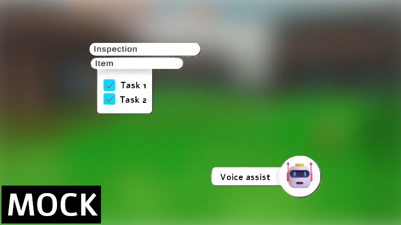
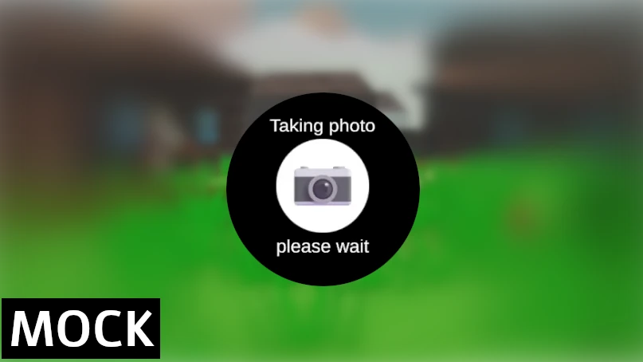
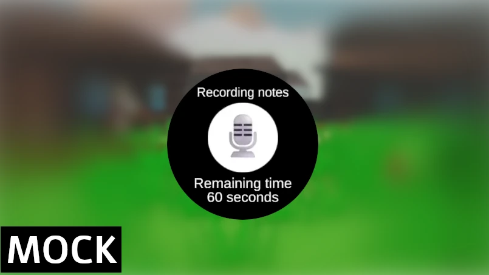
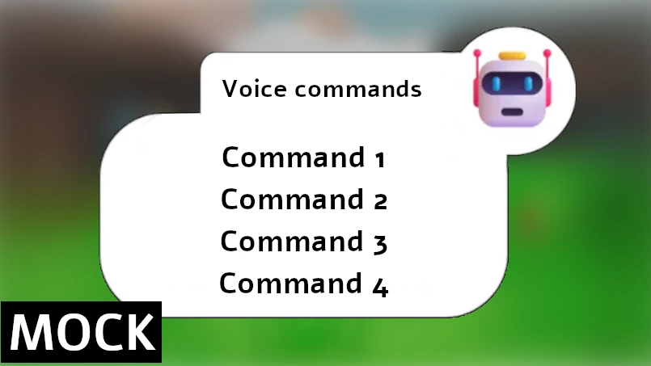
Not Available
OpenGL & PyGame projects
A few OpenGL and PyGame based programs written in Python.
⦁ Quad wrapper to render complex objects.
⦁ Implemented user input mechanics, to make the program more interactive.
⦁ Simulation of ambient, diffuse abd specular lighting.
⦁ Creation of a simple user interface.
⦁ Implementation of texture wrapping and rendering.
⦁ Loading and rendering of 2D sprites.
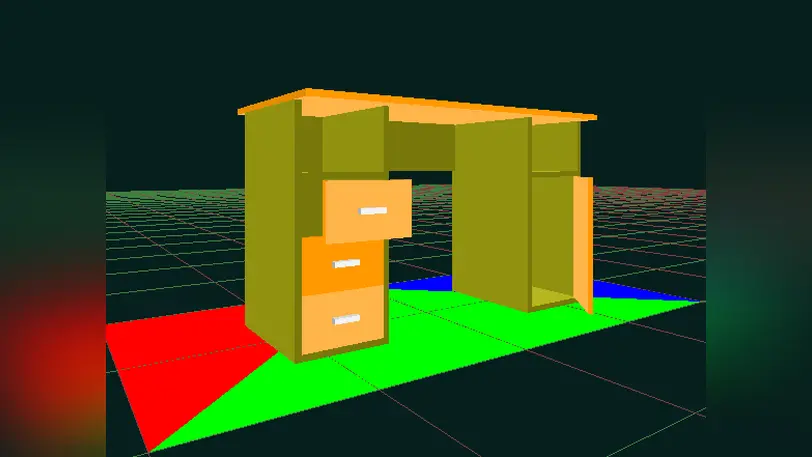
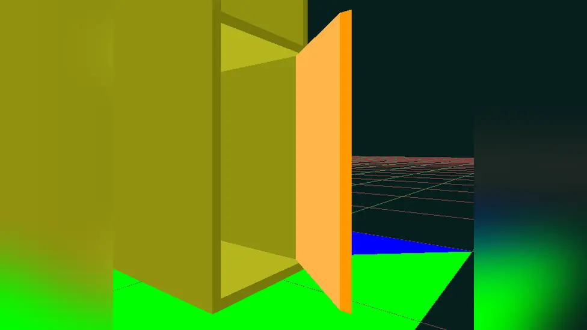
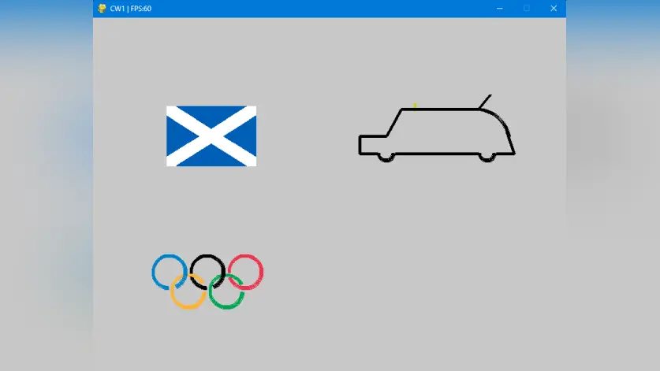
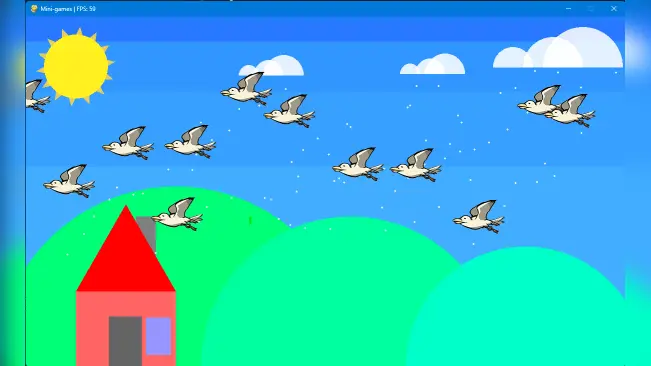
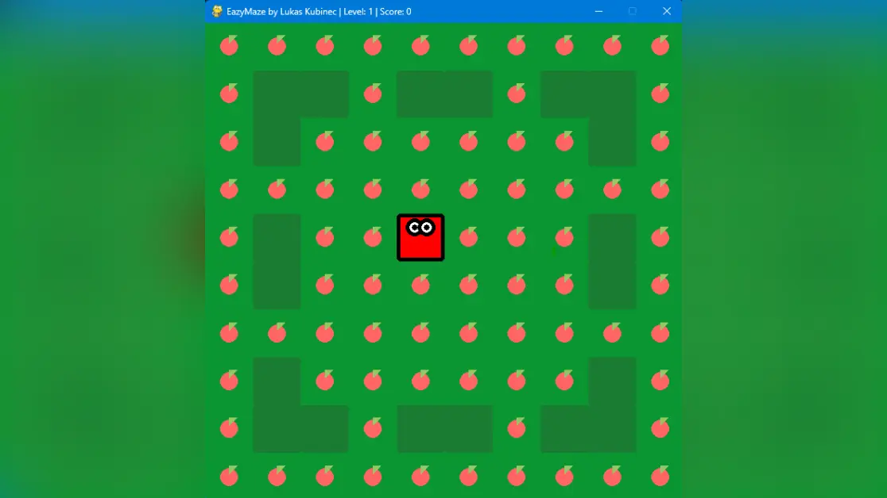
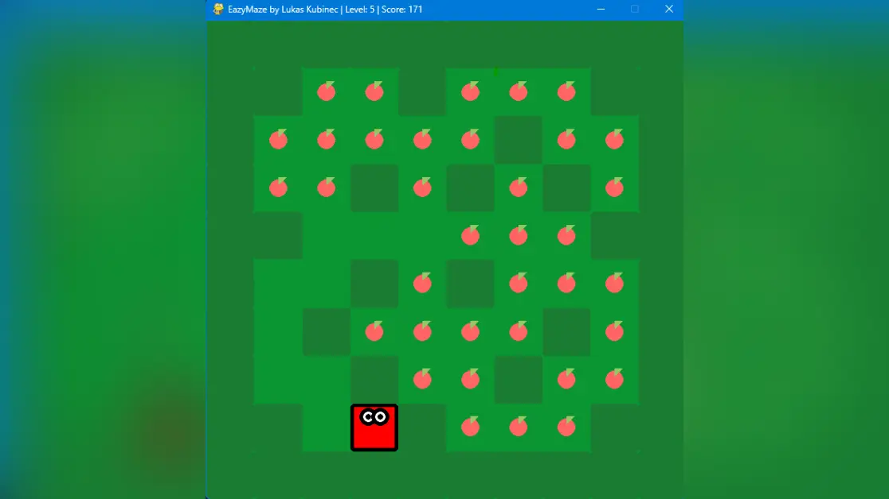
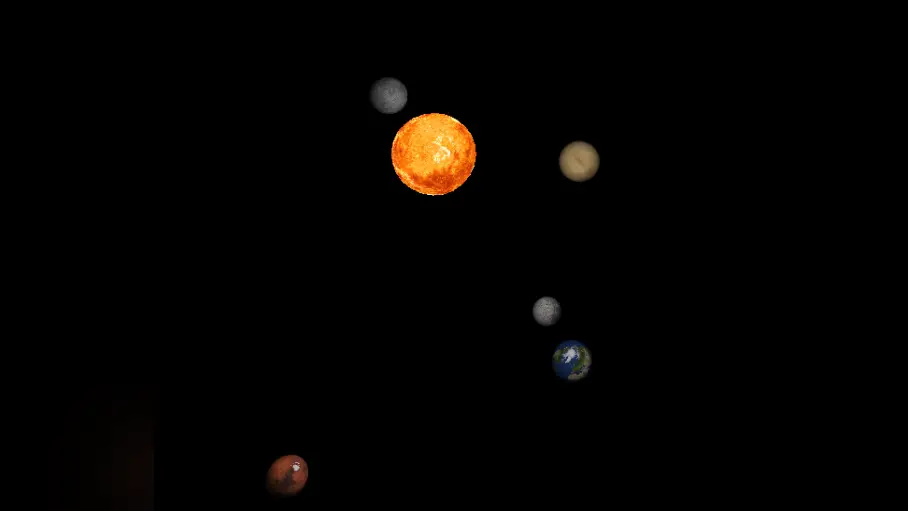
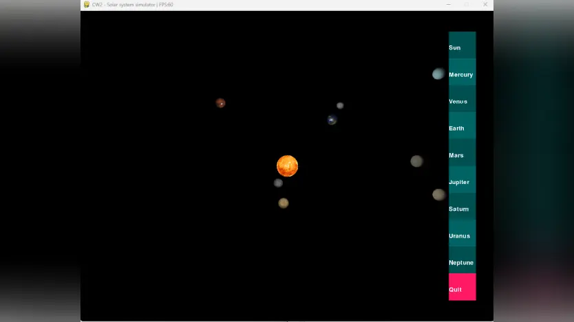
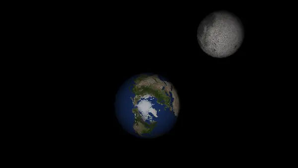
Download Project
Solar System
Table Renderer
Maze Game
Student portal redesign
Student portal design proposal based on student input.
⦁ Creation of detailed plan and questionnaire to evaluate the current student portal design, that was given out to students.
⦁ Pointing out the most common pains and good ideas that were to be used on the new design propsoal.
⦁ Creation of personas based on the student input - ideas, pain points, etc.
⦁ Creation of design plan and concepts.
⦁ Building of the newly proposed design using Figma.
⦁ Conducting "ThinkAloud" sessions with students. Newly built student portal given out to students to test, to evaluate it and uncover potential pain points.
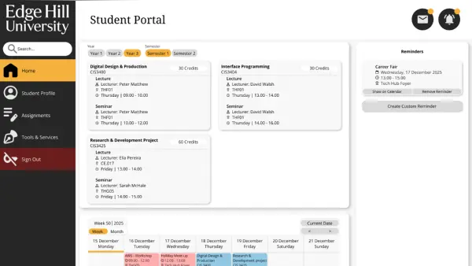
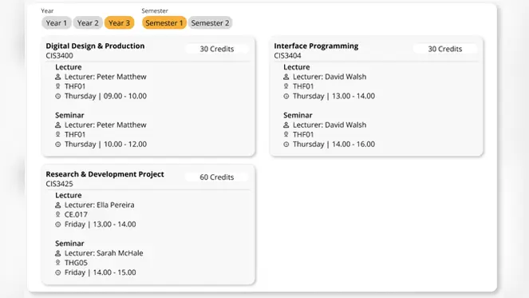
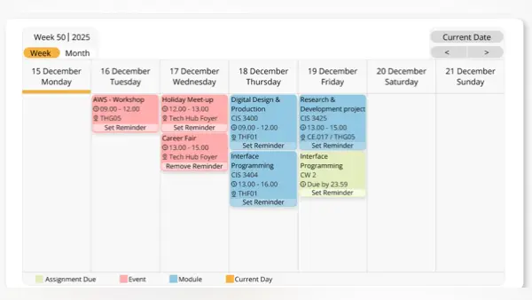
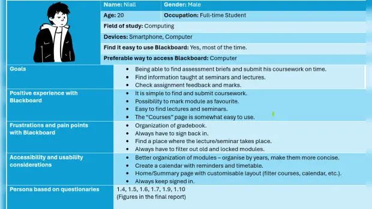
Download Project
Handwritten digit recognition
Machine learning based on the Keras' sequential model to identify handwritten numbers.
⦁ Implementation of the Keras machine learning library.
⦁ Trained model on 60,000 handwritten digits.
⦁ Tested model on 200 handwritten digits from testing dataset of 10,000 digits, with an average accuracy of 99.5%.
.webp)
.webp) Download Project
GitHub
Download Project
GitHub
MySQL backend database project
Creation of SQL database for a music festival.
⦁ Designed an ERD concept for the database.
⦁ Wrote the initial SQL queries to create the necessary tables.
⦁ Wrote SQL queries to handle information stored in database.
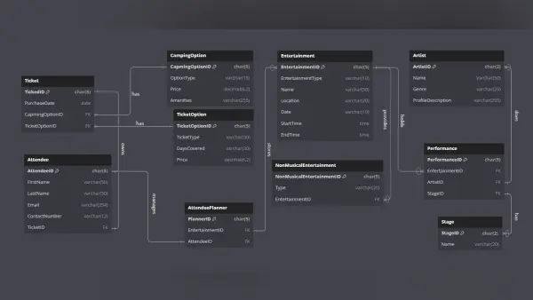
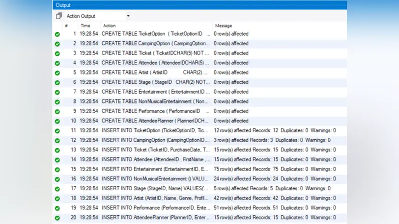
Download Project
Wireless Sensor Network environment
A UDP (User Datagram Protocol) based SINK-NODE system written in Python.
⦁ Researched most common network communication methods.
⦁ Designed a concept of what the system should look like and how it should function.
⦁ Researched the implementation of a UDP system for Sink and Nodes.
⦁ Developed the network system, implemented the UDP communication method.
⦁ Created two ways the nodes would communicate with the sink: TIME and EVENT driven methods.
⦁ Developed user interface using the Tkinter library.
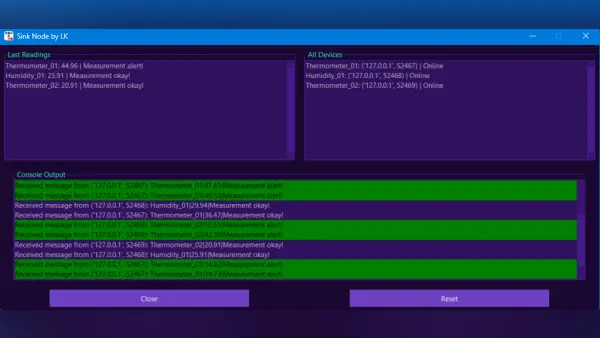
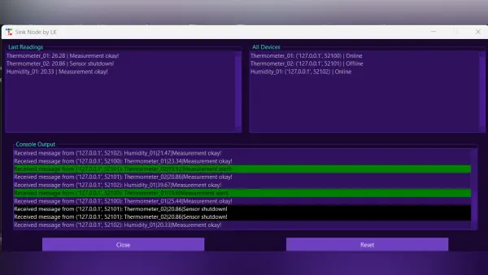
Download Project